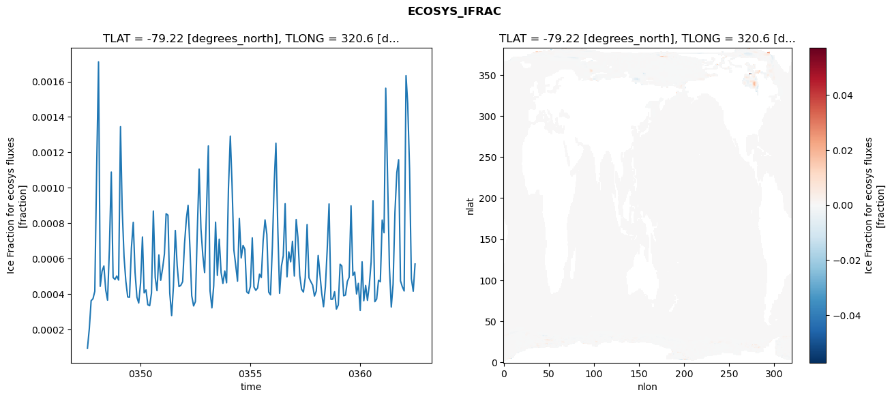
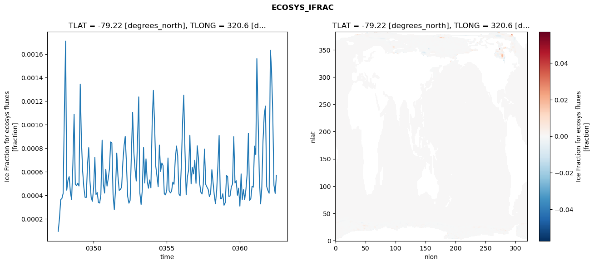

glb-dor_North_Atlantic_basin_024_1999-07-01_00098#
Simulation details#
Case: smyle.cdr-atlas-v0.glb-dor_North_Atlantic_basin_024_1999-07-01_00098.001
Basin: North_Atlantic_basin
Polygon: 24.0
Start date: 1999-07
Show code cell source Hide code cell source
import xarray as xr
import matplotlib.pyplot as plt
Show code cell source Hide code cell source
zarr_store = "/path/to/zarr/store"
# Parameters
zarr_store = "/global/cfs/projectdirs/m4746/Projects/Ocean-CDR-Atlas-v0/data/validation/smyle.cdr-atlas-v0.glb-dor_North_Atlantic_basin_024_1999-07-01_00098.001.validation.zarr"
Show code cell source Hide code cell source
%%time
ds_o = xr.open_zarr(zarr_store).compute()
ds_o
CPU times: user 703 ms, sys: 435 ms, total: 1.14 s
Wall time: 1.49 s
<xarray.Dataset> Size: 2MB
Dimensions: (nlat: 384, nlon: 320, time: 180)
Coordinates:
TLAT float64 8B -79.22
TLONG float64 8B 320.6
ULAT float64 8B -78.95
ULONG float64 8B 321.1
* time (time) object 1kB 0347-08-01 00:00:00 ... 0362-07-01 0...
z_t float32 4B 500.0
Dimensions without coordinates: nlat, nlon
Data variables:
ALK_ALT_CO2_diff (nlat, nlon) float32 492kB nan nan nan ... nan nan nan
ALK_ALT_CO2_rmse (time) float64 1kB 0.01456 0.02655 ... 0.1181 0.08845
DIC_ALT_CO2_diff (nlat, nlon) float32 492kB nan nan nan ... nan nan nan
DIC_ALT_CO2_rmse (time) float64 1kB 0.02729 0.06617 ... 0.1337 0.1176
ECOSYS_IFRAC_diff (nlat, nlon) float32 492kB nan nan nan ... nan nan nan
ECOSYS_IFRAC_rmse (time) float64 1kB 9.281e-05 0.0002048 ... 0.0005695
FG_ALT_CO2_diff (nlat, nlon) float32 492kB nan nan nan ... nan nan nan
FG_ALT_CO2_rmse (time) float64 1kB 3.602e-06 8.283e-06 ... 1.321e-05xarray.Dataset
- nlat: 384
- nlon: 320
- time: 180
- TLAT()float64-79.22
- long_name :
- array of t-grid latitudes
- units :
- degrees_north
array(-79.22052261)
- TLONG()float64320.6
- long_name :
- array of t-grid longitudes
- units :
- degrees_east
array(320.56250892)
- ULAT()float64-78.95
- long_name :
- array of u-grid latitudes
- units :
- degrees_north
array(-78.95289509)
- ULONG()float64321.1
- long_name :
- array of u-grid longitudes
- units :
- degrees_east
array(321.12500894)
- time(time)object0347-08-01 00:00:00 ... 0362-07-...
- bounds :
- time_bound
- long_name :
- time
array([cftime.DatetimeNoLeap(347, 8, 1, 0, 0, 0, 0, has_year_zero=True), cftime.DatetimeNoLeap(347, 9, 1, 0, 0, 0, 0, has_year_zero=True), cftime.DatetimeNoLeap(347, 10, 1, 0, 0, 0, 0, has_year_zero=True), cftime.DatetimeNoLeap(347, 11, 1, 0, 0, 0, 0, has_year_zero=True), cftime.DatetimeNoLeap(347, 12, 1, 0, 0, 0, 0, has_year_zero=True), cftime.DatetimeNoLeap(348, 1, 1, 0, 0, 0, 0, has_year_zero=True), cftime.DatetimeNoLeap(348, 2, 1, 0, 0, 0, 0, has_year_zero=True), cftime.DatetimeNoLeap(348, 3, 1, 0, 0, 0, 0, has_year_zero=True), cftime.DatetimeNoLeap(348, 4, 1, 0, 0, 0, 0, has_year_zero=True), cftime.DatetimeNoLeap(348, 5, 1, 0, 0, 0, 0, has_year_zero=True), cftime.DatetimeNoLeap(348, 6, 1, 0, 0, 0, 0, has_year_zero=True), cftime.DatetimeNoLeap(348, 7, 1, 0, 0, 0, 0, has_year_zero=True), cftime.DatetimeNoLeap(348, 8, 1, 0, 0, 0, 0, has_year_zero=True), cftime.DatetimeNoLeap(348, 9, 1, 0, 0, 0, 0, has_year_zero=True), cftime.DatetimeNoLeap(348, 10, 1, 0, 0, 0, 0, has_year_zero=True), cftime.DatetimeNoLeap(348, 11, 1, 0, 0, 0, 0, has_year_zero=True), cftime.DatetimeNoLeap(348, 12, 1, 0, 0, 0, 0, has_year_zero=True), cftime.DatetimeNoLeap(349, 1, 1, 0, 0, 0, 0, has_year_zero=True), cftime.DatetimeNoLeap(349, 2, 1, 0, 0, 0, 0, has_year_zero=True), cftime.DatetimeNoLeap(349, 3, 1, 0, 0, 0, 0, has_year_zero=True), cftime.DatetimeNoLeap(349, 4, 1, 0, 0, 0, 0, has_year_zero=True), cftime.DatetimeNoLeap(349, 5, 1, 0, 0, 0, 0, has_year_zero=True), cftime.DatetimeNoLeap(349, 6, 1, 0, 0, 0, 0, has_year_zero=True), cftime.DatetimeNoLeap(349, 7, 1, 0, 0, 0, 0, has_year_zero=True), cftime.DatetimeNoLeap(349, 8, 1, 0, 0, 0, 0, has_year_zero=True), cftime.DatetimeNoLeap(349, 9, 1, 0, 0, 0, 0, has_year_zero=True), cftime.DatetimeNoLeap(349, 10, 1, 0, 0, 0, 0, has_year_zero=True), cftime.DatetimeNoLeap(349, 11, 1, 0, 0, 0, 0, has_year_zero=True), cftime.DatetimeNoLeap(349, 12, 1, 0, 0, 0, 0, has_year_zero=True), cftime.DatetimeNoLeap(350, 1, 1, 0, 0, 0, 0, has_year_zero=True), cftime.DatetimeNoLeap(350, 2, 1, 0, 0, 0, 0, has_year_zero=True), cftime.DatetimeNoLeap(350, 3, 1, 0, 0, 0, 0, has_year_zero=True), cftime.DatetimeNoLeap(350, 4, 1, 0, 0, 0, 0, has_year_zero=True), cftime.DatetimeNoLeap(350, 5, 1, 0, 0, 0, 0, has_year_zero=True), cftime.DatetimeNoLeap(350, 6, 1, 0, 0, 0, 0, has_year_zero=True), cftime.DatetimeNoLeap(350, 7, 1, 0, 0, 0, 0, has_year_zero=True), cftime.DatetimeNoLeap(350, 8, 1, 0, 0, 0, 0, has_year_zero=True), cftime.DatetimeNoLeap(350, 9, 1, 0, 0, 0, 0, has_year_zero=True), cftime.DatetimeNoLeap(350, 10, 1, 0, 0, 0, 0, has_year_zero=True), cftime.DatetimeNoLeap(350, 11, 1, 0, 0, 0, 0, has_year_zero=True), cftime.DatetimeNoLeap(350, 12, 1, 0, 0, 0, 0, has_year_zero=True), cftime.DatetimeNoLeap(351, 1, 1, 0, 0, 0, 0, has_year_zero=True), cftime.DatetimeNoLeap(351, 2, 1, 0, 0, 0, 0, has_year_zero=True), cftime.DatetimeNoLeap(351, 3, 1, 0, 0, 0, 0, has_year_zero=True), cftime.DatetimeNoLeap(351, 4, 1, 0, 0, 0, 0, has_year_zero=True), cftime.DatetimeNoLeap(351, 5, 1, 0, 0, 0, 0, has_year_zero=True), cftime.DatetimeNoLeap(351, 6, 1, 0, 0, 0, 0, has_year_zero=True), cftime.DatetimeNoLeap(351, 7, 1, 0, 0, 0, 0, has_year_zero=True), cftime.DatetimeNoLeap(351, 8, 1, 0, 0, 0, 0, has_year_zero=True), cftime.DatetimeNoLeap(351, 9, 1, 0, 0, 0, 0, has_year_zero=True), cftime.DatetimeNoLeap(351, 10, 1, 0, 0, 0, 0, has_year_zero=True), cftime.DatetimeNoLeap(351, 11, 1, 0, 0, 0, 0, has_year_zero=True), cftime.DatetimeNoLeap(351, 12, 1, 0, 0, 0, 0, has_year_zero=True), cftime.DatetimeNoLeap(352, 1, 1, 0, 0, 0, 0, has_year_zero=True), cftime.DatetimeNoLeap(352, 2, 1, 0, 0, 0, 0, has_year_zero=True), cftime.DatetimeNoLeap(352, 3, 1, 0, 0, 0, 0, has_year_zero=True), cftime.DatetimeNoLeap(352, 4, 1, 0, 0, 0, 0, has_year_zero=True), cftime.DatetimeNoLeap(352, 5, 1, 0, 0, 0, 0, has_year_zero=True), cftime.DatetimeNoLeap(352, 6, 1, 0, 0, 0, 0, has_year_zero=True), cftime.DatetimeNoLeap(352, 7, 1, 0, 0, 0, 0, has_year_zero=True), cftime.DatetimeNoLeap(352, 8, 1, 0, 0, 0, 0, has_year_zero=True), cftime.DatetimeNoLeap(352, 9, 1, 0, 0, 0, 0, has_year_zero=True), cftime.DatetimeNoLeap(352, 10, 1, 0, 0, 0, 0, has_year_zero=True), cftime.DatetimeNoLeap(352, 11, 1, 0, 0, 0, 0, has_year_zero=True), cftime.DatetimeNoLeap(352, 12, 1, 0, 0, 0, 0, has_year_zero=True), cftime.DatetimeNoLeap(353, 1, 1, 0, 0, 0, 0, has_year_zero=True), cftime.DatetimeNoLeap(353, 2, 1, 0, 0, 0, 0, has_year_zero=True), cftime.DatetimeNoLeap(353, 3, 1, 0, 0, 0, 0, has_year_zero=True), cftime.DatetimeNoLeap(353, 4, 1, 0, 0, 0, 0, has_year_zero=True), cftime.DatetimeNoLeap(353, 5, 1, 0, 0, 0, 0, has_year_zero=True), cftime.DatetimeNoLeap(353, 6, 1, 0, 0, 0, 0, has_year_zero=True), cftime.DatetimeNoLeap(353, 7, 1, 0, 0, 0, 0, has_year_zero=True), cftime.DatetimeNoLeap(353, 8, 1, 0, 0, 0, 0, has_year_zero=True), cftime.DatetimeNoLeap(353, 9, 1, 0, 0, 0, 0, has_year_zero=True), cftime.DatetimeNoLeap(353, 10, 1, 0, 0, 0, 0, has_year_zero=True), cftime.DatetimeNoLeap(353, 11, 1, 0, 0, 0, 0, has_year_zero=True), cftime.DatetimeNoLeap(353, 12, 1, 0, 0, 0, 0, has_year_zero=True), cftime.DatetimeNoLeap(354, 1, 1, 0, 0, 0, 0, has_year_zero=True), cftime.DatetimeNoLeap(354, 2, 1, 0, 0, 0, 0, has_year_zero=True), cftime.DatetimeNoLeap(354, 3, 1, 0, 0, 0, 0, has_year_zero=True), cftime.DatetimeNoLeap(354, 4, 1, 0, 0, 0, 0, has_year_zero=True), cftime.DatetimeNoLeap(354, 5, 1, 0, 0, 0, 0, has_year_zero=True), cftime.DatetimeNoLeap(354, 6, 1, 0, 0, 0, 0, has_year_zero=True), cftime.DatetimeNoLeap(354, 7, 1, 0, 0, 0, 0, has_year_zero=True), cftime.DatetimeNoLeap(354, 8, 1, 0, 0, 0, 0, has_year_zero=True), cftime.DatetimeNoLeap(354, 9, 1, 0, 0, 0, 0, has_year_zero=True), cftime.DatetimeNoLeap(354, 10, 1, 0, 0, 0, 0, has_year_zero=True), cftime.DatetimeNoLeap(354, 11, 1, 0, 0, 0, 0, has_year_zero=True), cftime.DatetimeNoLeap(354, 12, 1, 0, 0, 0, 0, has_year_zero=True), cftime.DatetimeNoLeap(355, 1, 1, 0, 0, 0, 0, has_year_zero=True), cftime.DatetimeNoLeap(355, 2, 1, 0, 0, 0, 0, has_year_zero=True), cftime.DatetimeNoLeap(355, 3, 1, 0, 0, 0, 0, has_year_zero=True), cftime.DatetimeNoLeap(355, 4, 1, 0, 0, 0, 0, has_year_zero=True), cftime.DatetimeNoLeap(355, 5, 1, 0, 0, 0, 0, has_year_zero=True), cftime.DatetimeNoLeap(355, 6, 1, 0, 0, 0, 0, has_year_zero=True), cftime.DatetimeNoLeap(355, 7, 1, 0, 0, 0, 0, has_year_zero=True), cftime.DatetimeNoLeap(355, 8, 1, 0, 0, 0, 0, has_year_zero=True), cftime.DatetimeNoLeap(355, 9, 1, 0, 0, 0, 0, has_year_zero=True), cftime.DatetimeNoLeap(355, 10, 1, 0, 0, 0, 0, has_year_zero=True), cftime.DatetimeNoLeap(355, 11, 1, 0, 0, 0, 0, has_year_zero=True), cftime.DatetimeNoLeap(355, 12, 1, 0, 0, 0, 0, has_year_zero=True), cftime.DatetimeNoLeap(356, 1, 1, 0, 0, 0, 0, has_year_zero=True), cftime.DatetimeNoLeap(356, 2, 1, 0, 0, 0, 0, has_year_zero=True), cftime.DatetimeNoLeap(356, 3, 1, 0, 0, 0, 0, has_year_zero=True), cftime.DatetimeNoLeap(356, 4, 1, 0, 0, 0, 0, has_year_zero=True), cftime.DatetimeNoLeap(356, 5, 1, 0, 0, 0, 0, has_year_zero=True), cftime.DatetimeNoLeap(356, 6, 1, 0, 0, 0, 0, has_year_zero=True), cftime.DatetimeNoLeap(356, 7, 1, 0, 0, 0, 0, has_year_zero=True), cftime.DatetimeNoLeap(356, 8, 1, 0, 0, 0, 0, has_year_zero=True), cftime.DatetimeNoLeap(356, 9, 1, 0, 0, 0, 0, has_year_zero=True), cftime.DatetimeNoLeap(356, 10, 1, 0, 0, 0, 0, has_year_zero=True), cftime.DatetimeNoLeap(356, 11, 1, 0, 0, 0, 0, has_year_zero=True), cftime.DatetimeNoLeap(356, 12, 1, 0, 0, 0, 0, has_year_zero=True), cftime.DatetimeNoLeap(357, 1, 1, 0, 0, 0, 0, has_year_zero=True), cftime.DatetimeNoLeap(357, 2, 1, 0, 0, 0, 0, has_year_zero=True), cftime.DatetimeNoLeap(357, 3, 1, 0, 0, 0, 0, has_year_zero=True), cftime.DatetimeNoLeap(357, 4, 1, 0, 0, 0, 0, has_year_zero=True), cftime.DatetimeNoLeap(357, 5, 1, 0, 0, 0, 0, has_year_zero=True), cftime.DatetimeNoLeap(357, 6, 1, 0, 0, 0, 0, has_year_zero=True), cftime.DatetimeNoLeap(357, 7, 1, 0, 0, 0, 0, has_year_zero=True), cftime.DatetimeNoLeap(357, 8, 1, 0, 0, 0, 0, has_year_zero=True), cftime.DatetimeNoLeap(357, 9, 1, 0, 0, 0, 0, has_year_zero=True), cftime.DatetimeNoLeap(357, 10, 1, 0, 0, 0, 0, has_year_zero=True), cftime.DatetimeNoLeap(357, 11, 1, 0, 0, 0, 0, has_year_zero=True), cftime.DatetimeNoLeap(357, 12, 1, 0, 0, 0, 0, has_year_zero=True), cftime.DatetimeNoLeap(358, 1, 1, 0, 0, 0, 0, has_year_zero=True), cftime.DatetimeNoLeap(358, 2, 1, 0, 0, 0, 0, has_year_zero=True), cftime.DatetimeNoLeap(358, 3, 1, 0, 0, 0, 0, has_year_zero=True), cftime.DatetimeNoLeap(358, 4, 1, 0, 0, 0, 0, has_year_zero=True), cftime.DatetimeNoLeap(358, 5, 1, 0, 0, 0, 0, has_year_zero=True), cftime.DatetimeNoLeap(358, 6, 1, 0, 0, 0, 0, has_year_zero=True), cftime.DatetimeNoLeap(358, 7, 1, 0, 0, 0, 0, has_year_zero=True), cftime.DatetimeNoLeap(358, 8, 1, 0, 0, 0, 0, has_year_zero=True), cftime.DatetimeNoLeap(358, 9, 1, 0, 0, 0, 0, has_year_zero=True), cftime.DatetimeNoLeap(358, 10, 1, 0, 0, 0, 0, has_year_zero=True), cftime.DatetimeNoLeap(358, 11, 1, 0, 0, 0, 0, has_year_zero=True), cftime.DatetimeNoLeap(358, 12, 1, 0, 0, 0, 0, has_year_zero=True), cftime.DatetimeNoLeap(359, 1, 1, 0, 0, 0, 0, has_year_zero=True), cftime.DatetimeNoLeap(359, 2, 1, 0, 0, 0, 0, has_year_zero=True), cftime.DatetimeNoLeap(359, 3, 1, 0, 0, 0, 0, has_year_zero=True), cftime.DatetimeNoLeap(359, 4, 1, 0, 0, 0, 0, has_year_zero=True), cftime.DatetimeNoLeap(359, 5, 1, 0, 0, 0, 0, has_year_zero=True), cftime.DatetimeNoLeap(359, 6, 1, 0, 0, 0, 0, has_year_zero=True), cftime.DatetimeNoLeap(359, 7, 1, 0, 0, 0, 0, has_year_zero=True), cftime.DatetimeNoLeap(359, 8, 1, 0, 0, 0, 0, has_year_zero=True), cftime.DatetimeNoLeap(359, 9, 1, 0, 0, 0, 0, has_year_zero=True), cftime.DatetimeNoLeap(359, 10, 1, 0, 0, 0, 0, has_year_zero=True), cftime.DatetimeNoLeap(359, 11, 1, 0, 0, 0, 0, has_year_zero=True), cftime.DatetimeNoLeap(359, 12, 1, 0, 0, 0, 0, has_year_zero=True), cftime.DatetimeNoLeap(360, 1, 1, 0, 0, 0, 0, has_year_zero=True), cftime.DatetimeNoLeap(360, 2, 1, 0, 0, 0, 0, has_year_zero=True), cftime.DatetimeNoLeap(360, 3, 1, 0, 0, 0, 0, has_year_zero=True), cftime.DatetimeNoLeap(360, 4, 1, 0, 0, 0, 0, has_year_zero=True), cftime.DatetimeNoLeap(360, 5, 1, 0, 0, 0, 0, has_year_zero=True), cftime.DatetimeNoLeap(360, 6, 1, 0, 0, 0, 0, has_year_zero=True), cftime.DatetimeNoLeap(360, 7, 1, 0, 0, 0, 0, has_year_zero=True), cftime.DatetimeNoLeap(360, 8, 1, 0, 0, 0, 0, has_year_zero=True), cftime.DatetimeNoLeap(360, 9, 1, 0, 0, 0, 0, has_year_zero=True), cftime.DatetimeNoLeap(360, 10, 1, 0, 0, 0, 0, has_year_zero=True), cftime.DatetimeNoLeap(360, 11, 1, 0, 0, 0, 0, has_year_zero=True), cftime.DatetimeNoLeap(360, 12, 1, 0, 0, 0, 0, has_year_zero=True), cftime.DatetimeNoLeap(361, 1, 1, 0, 0, 0, 0, has_year_zero=True), cftime.DatetimeNoLeap(361, 2, 1, 0, 0, 0, 0, has_year_zero=True), cftime.DatetimeNoLeap(361, 3, 1, 0, 0, 0, 0, has_year_zero=True), cftime.DatetimeNoLeap(361, 4, 1, 0, 0, 0, 0, has_year_zero=True), cftime.DatetimeNoLeap(361, 5, 1, 0, 0, 0, 0, has_year_zero=True), cftime.DatetimeNoLeap(361, 6, 1, 0, 0, 0, 0, has_year_zero=True), cftime.DatetimeNoLeap(361, 7, 1, 0, 0, 0, 0, has_year_zero=True), cftime.DatetimeNoLeap(361, 8, 1, 0, 0, 0, 0, has_year_zero=True), cftime.DatetimeNoLeap(361, 9, 1, 0, 0, 0, 0, has_year_zero=True), cftime.DatetimeNoLeap(361, 10, 1, 0, 0, 0, 0, has_year_zero=True), cftime.DatetimeNoLeap(361, 11, 1, 0, 0, 0, 0, has_year_zero=True), cftime.DatetimeNoLeap(361, 12, 1, 0, 0, 0, 0, has_year_zero=True), cftime.DatetimeNoLeap(362, 1, 1, 0, 0, 0, 0, has_year_zero=True), cftime.DatetimeNoLeap(362, 2, 1, 0, 0, 0, 0, has_year_zero=True), cftime.DatetimeNoLeap(362, 3, 1, 0, 0, 0, 0, has_year_zero=True), cftime.DatetimeNoLeap(362, 4, 1, 0, 0, 0, 0, has_year_zero=True), cftime.DatetimeNoLeap(362, 5, 1, 0, 0, 0, 0, has_year_zero=True), cftime.DatetimeNoLeap(362, 6, 1, 0, 0, 0, 0, has_year_zero=True), cftime.DatetimeNoLeap(362, 7, 1, 0, 0, 0, 0, has_year_zero=True)], dtype=object) - z_t()float32500.0
- long_name :
- depth from surface to midpoint of layer
- positive :
- down
- units :
- centimeters
- valid_max :
- 537500.0
- valid_min :
- 500.0
array(500., dtype=float32)
- ALK_ALT_CO2_diff(nlat, nlon)float32nan nan nan nan ... nan nan nan nan
- cell_methods :
- time: mean
- grid_loc :
- 3111
- long_name :
- Alkalinity, Alternative CO2
- units :
- meq/m^3
array([[ nan, nan, nan, ..., nan, nan, nan], [ nan, nan, nan, ..., nan, nan, nan], [0.02294922, 0.00756836, 0.01391602, ..., nan, nan, nan], ..., [ nan, nan, nan, ..., nan, nan, nan], [ nan, nan, nan, ..., nan, nan, nan], [ nan, nan, nan, ..., nan, nan, nan]], dtype=float32) - ALK_ALT_CO2_rmse(time)float640.01456 0.02655 ... 0.1181 0.08845
- cell_methods :
- time: mean
- grid_loc :
- 3111
- long_name :
- Alkalinity, Alternative CO2
- units :
- meq/m^3
array([0.01456061, 0.02655439, 0.02703063, 0.03415096, 0.04107676, 0.05584926, 0.10552884, 0.13809492, 0.09384454, 0.08812556, 0.08649491, 0.08776665, 0.14167711, 0.05975812, 0.07536045, 0.05535249, 0.06252379, 0.07428252, 0.14212202, 0.1771117 , 0.12957865, 0.10741017, 0.10416298, 0.11749067, 0.12885919, 0.12528728, 0.06555123, 0.06914731, 0.05274796, 0.0593431 , 0.1797225 , 0.26615025, 0.12343808, 0.10318414, 0.12244349, 0.15325916, 0.17621251, 0.10593567, 0.07991487, 0.07248731, 0.05504041, 0.05655861, 0.13425281, 0.20060792, 0.10165544, 0.16208877, 0.12475215, 0.16154635, 0.18593024, 0.0957205 , 0.08229634, 0.06546843, 0.06372807, 0.06585664, 0.10781195, 0.13779962, 0.10183572, 0.1114175 , 0.10289102, 0.11476984, 0.16000271, 0.09853298, 0.08576821, 0.08476273, 0.06879931, 0.0630833 , 0.09434196, 0.17712966, 0.11112556, 0.11568579, 0.08977003, 0.10794741, 0.15157268, 0.08623697, 0.06997989, 0.08121594, 0.08492204, 0.08342899, 0.14827842, 0.216371 , 0.12724173, 0.11711333, 0.16345125, 0.16056985, 0.17558731, 0.14592417, 0.09626198, 0.06557991, 0.06098615, 0.06787341, 0.15352234, 0.19534625, 0.10006726, 0.09215768, 0.1300839 , 0.12978598, 0.13803787, 0.15521701, 0.16207649, 0.14969688, 0.11910198, 0.08777759, 0.11175956, 0.16476117, 0.10306777, 0.09841258, 0.10872517, 0.14038327, 0.16583453, 0.10634964, 0.10237185, 0.12750475, 0.14832744, 0.15045602, 0.1840408 , 0.23274403, 0.17965068, 0.13080135, 0.18330818, 0.14497662, 0.17654507, 0.17231906, 0.12339704, 0.11187047, 0.10824578, 0.092654 , 0.27877029, 0.32691029, 0.15680296, 0.1389947 , 0.10639596, 0.13628257, 0.13844756, 0.09390105, 0.10546207, 0.0987486 , 0.11110582, 0.11243474, 0.14513107, 0.16038448, 0.10849868, 0.11997457, 0.13821686, 0.14211145, 0.13690385, 0.07255457, 0.06605462, 0.07955108, 0.08648238, 0.08604617, 0.10534282, 0.19503831, 0.10670134, 0.11736796, 0.27215969, 0.15797899, 0.1455081 , 0.08737108, 0.07048734, 0.07222436, 0.07255181, 0.0848138 , 0.14201524, 0.16982498, 0.09914288, 0.09371537, 0.15429375, 0.19985018, 0.18073699, 0.12361253, 0.12174855, 0.09082237, 0.08394909, 0.06331116, 0.14399132, 0.16096002, 0.10264702, 0.0897461 , 0.11814172, 0.08845204]) - DIC_ALT_CO2_diff(nlat, nlon)float32nan nan nan nan ... nan nan nan nan
- cell_methods :
- time: mean
- grid_loc :
- 3111
- long_name :
- Dissolved Inorganic Carbon, Alternative CO2
- units :
- mmol/m^3
array([[ nan, nan, nan, ..., nan, nan, nan], [ nan, nan, nan, ..., nan, nan, nan], [0.03271484, 0.01977539, 0.02368164, ..., nan, nan, nan], ..., [ nan, nan, nan, ..., nan, nan, nan], [ nan, nan, nan, ..., nan, nan, nan], [ nan, nan, nan, ..., nan, nan, nan]], dtype=float32) - DIC_ALT_CO2_rmse(time)float640.02729 0.06617 ... 0.1337 0.1176
- cell_methods :
- time: mean
- grid_loc :
- 3111
- long_name :
- Dissolved Inorganic Carbon, Alternative CO2
- units :
- mmol/m^3
array([0.02728663, 0.06617202, 0.08020053, 0.08140025, 0.09761136, 0.12452642, 0.15464652, 0.1623993 , 0.12551657, 0.1240413 , 0.13298556, 0.1435034 , 0.17644322, 0.14873603, 0.15542544, 0.14703521, 0.13790458, 0.14023083, 0.18140728, 0.20618652, 0.15985807, 0.13521182, 0.13961286, 0.15265922, 0.16026947, 0.1640152 , 0.13597234, 0.12616245, 0.10898212, 0.12056013, 0.19782175, 0.25760464, 0.14006957, 0.12252232, 0.13879165, 0.16860008, 0.19242104, 0.14984241, 0.13290345, 0.11853094, 0.10167503, 0.10002642, 0.15139143, 0.19834521, 0.12847738, 0.17181513, 0.15875651, 0.1921313 , 0.199802 , 0.13898848, 0.12410168, 0.11764665, 0.1160092 , 0.11452478, 0.13681183, 0.15627884, 0.13605122, 0.14244897, 0.13712874, 0.14424973, 0.18398669, 0.13309978, 0.11875928, 0.11981139, 0.10799292, 0.1046817 , 0.13063414, 0.18590267, 0.1317474 , 0.1300812 , 0.11381702, 0.13768555, 0.17944771, 0.15629545, 0.18828528, 0.16366916, 0.18024268, 0.18830563, 0.21654996, 0.24977171, 0.17541064, 0.16505453, 0.19267107, 0.18885872, 0.19779533, 0.17466738, 0.14209076, 0.12553809, 0.1204512 , 0.12067636, 0.17523273, 0.22342437, 0.15544405, 0.15723819, 0.20758675, 0.19439168, 0.17842375, 0.19782779, 0.22302264, 0.26013996, 0.22345105, 0.1752357 , 0.2069679 , 0.2231093 , 0.15969951, 0.13643496, 0.13947069, 0.16996873, 0.18428918, 0.14418754, 0.16405548, 0.17799078, 0.19635589, 0.20412323, 0.22632568, 0.25317455, 0.2010173 , 0.1605822 , 0.19207103, 0.16849083, 0.19666674, 0.19056398, 0.14303755, 0.13187521, 0.12032134, 0.10817887, 0.25814718, 0.29889774, 0.15210613, 0.13739199, 0.1311079 , 0.18838382, 0.19998544, 0.18915159, 0.23624625, 0.22716925, 0.24134099, 0.23093307, 0.27728685, 0.34879213, 0.25904757, 0.18201541, 0.17175835, 0.17167946, 0.16553521, 0.13777762, 0.17654687, 0.21124172, 0.1953557 , 0.19068152, 0.18782025, 0.23688085, 0.16535118, 0.15612301, 0.27712918, 0.1934498 , 0.17510988, 0.14119374, 0.1417493 , 0.15618022, 0.13616386, 0.1507419 , 0.1843219 , 0.20336597, 0.14212224, 0.12562828, 0.16578649, 0.21066628, 0.19643591, 0.15504977, 0.14763338, 0.12789052, 0.12937663, 0.11064776, 0.17549966, 0.1921136 , 0.14395126, 0.12478313, 0.13371215, 0.11755497]) - ECOSYS_IFRAC_diff(nlat, nlon)float32nan nan nan nan ... nan nan nan nan
- cell_methods :
- time: mean
- grid_loc :
- 2110
- long_name :
- Ice Fraction for ecosys fluxes
- units :
- fraction
array([[ nan, nan, nan, ..., nan, nan, nan], [ nan, nan, nan, ..., nan, nan, nan], [1.9192696e-05, 6.5445900e-05, 1.2993813e-05, ..., nan, nan, nan], ..., [ nan, nan, nan, ..., nan, nan, nan], [ nan, nan, nan, ..., nan, nan, nan], [ nan, nan, nan, ..., nan, nan, nan]], dtype=float32) - ECOSYS_IFRAC_rmse(time)float649.281e-05 0.0002048 ... 0.0005695
- cell_methods :
- time: mean
- grid_loc :
- 2110
- long_name :
- Ice Fraction for ecosys fluxes
- units :
- fraction
array([9.28138091e-05, 2.04823319e-04, 3.61925843e-04, 3.73142806e-04, 4.15147235e-04, 1.10544897e-03, 1.71104405e-03, 4.42841076e-04, 5.29259207e-04, 5.58013040e-04, 4.21389396e-04, 3.64972065e-04, 6.59976528e-04, 1.08852735e-03, 4.92988003e-04, 4.81844790e-04, 5.01610774e-04, 4.78343576e-04, 1.34496063e-03, 8.82846247e-04, 6.10082008e-04, 4.71510697e-04, 3.82843811e-04, 3.81242573e-04, 6.57907899e-04, 8.04663429e-04, 5.22218382e-04, 3.81443214e-04, 3.48683341e-04, 4.63644760e-04, 7.22011380e-04, 4.05939949e-04, 4.22913379e-04, 3.39181961e-04, 3.33707624e-04, 4.04987362e-04, 8.68598644e-04, 4.93064287e-04, 4.18671340e-04, 6.20250388e-04, 4.77325441e-04, 5.42498999e-04, 6.25851677e-04, 8.53283215e-04, 8.45018067e-04, 4.04700228e-04, 2.78001612e-04, 4.43972840e-04, 7.58703771e-04, 5.59359137e-04, 4.41682503e-04, 4.49056429e-04, 4.69538111e-04, 6.83028472e-04, 8.25934860e-04, 9.00463845e-04, 6.60836668e-04, 3.89432261e-04, 3.32276411e-04, 3.57196693e-04, 7.50230975e-04, 1.10524683e-03, 7.68840796e-04, 6.18238415e-04, 5.20892466e-04, 8.68877626e-04, 1.23630685e-03, 4.18006076e-04, 3.21388526e-04, 4.45948194e-04, 8.05557364e-04, 5.04747885e-04, 7.09402103e-04, 5.21268370e-04, 4.59851465e-04, 5.29597155e-04, 4.63046745e-04, 9.96610912e-04, 1.29174541e-03, 1.02777603e-03, ... 3.94722261e-04, 6.69311137e-04, 1.03278840e-03, 1.25151613e-03, 7.73782334e-04, 4.03429820e-04, 5.57290077e-04, 6.15277252e-04, 9.09848710e-04, 4.96872056e-04, 6.37825929e-04, 5.81517378e-04, 6.97552101e-04, 5.01169512e-04, 8.20375220e-04, 7.20535295e-04, 5.04679133e-04, 4.26319551e-04, 4.10779590e-04, 4.91500291e-04, 7.92198233e-04, 4.91345517e-04, 4.69756247e-04, 4.49890807e-04, 3.88192436e-04, 4.16928965e-04, 6.17309385e-04, 5.16534243e-04, 4.03468985e-04, 3.28033777e-04, 4.40572760e-04, 6.50801142e-04, 9.08641025e-04, 3.69866023e-04, 3.70534829e-04, 4.12778990e-04, 3.14705583e-04, 3.37403825e-04, 5.67997145e-04, 5.57839047e-04, 3.89648435e-04, 3.94028826e-04, 4.70803550e-04, 4.94737416e-04, 8.97829409e-04, 5.04091534e-04, 5.23537104e-04, 4.00006428e-04, 4.59877325e-04, 3.07028627e-04, 5.81488186e-04, 3.61606169e-04, 4.47872583e-04, 3.63913306e-04, 4.51311246e-04, 5.79656711e-04, 9.27047346e-04, 3.56316808e-04, 3.71372615e-04, 4.77446669e-04, 4.68924059e-04, 8.17565277e-04, 7.45896515e-04, 1.56226996e-03, 1.04161389e-03, 5.51134801e-04, 3.26284817e-04, 4.54786322e-04, 8.62137234e-04, 1.08583373e-03, 1.15826817e-03, 4.74211378e-04, 4.41040203e-04, 4.16761925e-04, 1.63343382e-03, 1.47588206e-03, 1.10498303e-03, 4.85933268e-04, 4.15389331e-04, 5.69498710e-04]) - FG_ALT_CO2_diff(nlat, nlon)float32nan nan nan nan ... nan nan nan nan
- cell_methods :
- time: mean
- grid_loc :
- 2110
- long_name :
- DIC Surface Gas Flux, Alternative CO2
- units :
- mmol/m^3 cm/s
array([[ nan, nan, nan, ..., nan, nan, nan], [ nan, nan, nan, ..., nan, nan, nan], [-2.1566677e-08, -5.7942543e-08, -2.7259851e-08, ..., nan, nan, nan], ..., [ nan, nan, nan, ..., nan, nan, nan], [ nan, nan, nan, ..., nan, nan, nan], [ nan, nan, nan, ..., nan, nan, nan]], dtype=float32) - FG_ALT_CO2_rmse(time)float643.602e-06 8.283e-06 ... 1.321e-05
- cell_methods :
- time: mean
- grid_loc :
- 2110
- long_name :
- DIC Surface Gas Flux, Alternative CO2
- units :
- mmol/m^3 cm/s
array([3.60180891e-06, 8.28297687e-06, 1.20260904e-05, 1.24801794e-05, 1.26235407e-05, 1.95811129e-05, 1.88681974e-05, 1.51051568e-05, 1.28444656e-05, 1.38019799e-05, 1.69109428e-05, 1.48493797e-05, 1.55410748e-05, 2.16606943e-05, 2.06335423e-05, 2.46849709e-05, 2.21500900e-05, 2.39324171e-05, 2.40801639e-05, 2.01915173e-05, 1.53620214e-05, 1.70108024e-05, 2.07954526e-05, 1.82497270e-05, 1.61832337e-05, 1.50383683e-05, 1.80048919e-05, 1.72402075e-05, 1.67338072e-05, 1.65446508e-05, 1.83708995e-05, 1.25447144e-05, 1.01835016e-05, 1.13991130e-05, 1.21242281e-05, 1.22060349e-05, 1.34685520e-05, 1.47067913e-05, 1.32929119e-05, 1.13402462e-05, 1.15941535e-05, 1.24988975e-05, 1.38679709e-05, 1.26130640e-05, 1.26966269e-05, 1.61374984e-05, 3.83994205e-05, 3.53279996e-05, 1.71698529e-05, 1.65056833e-05, 1.46169376e-05, 1.91276213e-05, 2.26771770e-05, 1.84428570e-05, 1.85801942e-05, 1.68896257e-05, 1.46236404e-05, 1.71959453e-05, 4.41814436e-05, 1.45647336e-05, 1.70285933e-05, 1.94281544e-05, 1.91025143e-05, 3.82474157e-05, 2.98233706e-05, 1.80889740e-05, 1.97894049e-05, 1.49756409e-05, 1.33822538e-05, 1.55522855e-05, 1.51089059e-05, 1.46532238e-05, 1.26502017e-05, 1.99117544e-05, 3.02101301e-05, 3.87733709e-05, 3.83341015e-05, 3.04081109e-05, 3.37039913e-05, 1.83235657e-05, ... 3.74190340e-05, 2.69011324e-05, 2.73330920e-05, 2.44284743e-05, 2.23546636e-05, 1.55986687e-05, 1.26145029e-05, 1.30272656e-05, 1.45684244e-05, 1.47232438e-05, 1.49901833e-05, 1.90951475e-05, 2.00068077e-05, 1.99740585e-05, 2.27362285e-05, 2.24919387e-05, 1.86268419e-05, 1.68400621e-05, 1.65374651e-05, 1.55478372e-05, 1.82252856e-05, 1.36315720e-05, 1.75443233e-05, 1.70694232e-05, 1.84156762e-05, 1.32176424e-05, 1.50983928e-05, 1.25166494e-05, 1.11153848e-05, 1.07999796e-05, 1.60663490e-05, 1.77017831e-05, 2.17303653e-05, 2.37922810e-05, 2.83509311e-05, 3.30159379e-05, 4.05197010e-05, 3.83679713e-05, 3.96001001e-05, 3.82967960e-05, 2.64728163e-05, 2.03361078e-05, 1.85222661e-05, 1.72437352e-05, 1.50849751e-05, 1.56552781e-05, 2.50788953e-05, 2.42923943e-05, 3.32651286e-05, 3.06780925e-05, 2.63578990e-05, 2.44810994e-05, 2.05897345e-05, 2.99628313e-05, 1.63078071e-05, 1.59867346e-05, 1.78751011e-05, 1.56043198e-05, 1.74454865e-05, 2.20094247e-05, 2.19183043e-05, 2.33034254e-05, 2.22374727e-05, 1.85912224e-05, 1.67995164e-05, 2.74782208e-05, 1.31372034e-05, 1.35249965e-05, 1.65870733e-05, 1.70745573e-05, 1.89146547e-05, 1.26707673e-05, 1.74032262e-05, 1.62389530e-05, 1.92837818e-05, 2.05731212e-05, 1.68119989e-05, 1.48596805e-05, 1.74399389e-05, 1.32125067e-05])
- timePandasIndex
PandasIndex(CFTimeIndex([0347-08-01 00:00:00, 0347-09-01 00:00:00, 0347-10-01 00:00:00, 0347-11-01 00:00:00, 0347-12-01 00:00:00, 0348-01-01 00:00:00, 0348-02-01 00:00:00, 0348-03-01 00:00:00, 0348-04-01 00:00:00, 0348-05-01 00:00:00, ... 0361-10-01 00:00:00, 0361-11-01 00:00:00, 0361-12-01 00:00:00, 0362-01-01 00:00:00, 0362-02-01 00:00:00, 0362-03-01 00:00:00, 0362-04-01 00:00:00, 0362-05-01 00:00:00, 0362-06-01 00:00:00, 0362-07-01 00:00:00], dtype='object', length=180, calendar='noleap', freq='MS'))
Show code cell source Hide code cell source
variables = [v[:-5] for v in ds_o.variables if "_rmse" in v]
Show code cell source Hide code cell source
plt.rcParams.update({'figure.max_open_warning': 0})
for v in variables:
fig, axs = plt.subplots(1, 2, figsize=(15, 6))
ds_o[f"{v}_rmse"].plot(ax=axs[0])
ds_o[f"{v}_diff"].plot(ax=axs[1])
plt.suptitle(v, fontweight="bold")

 
